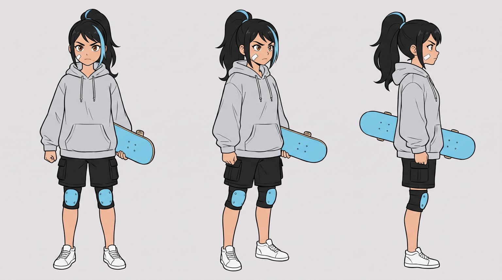
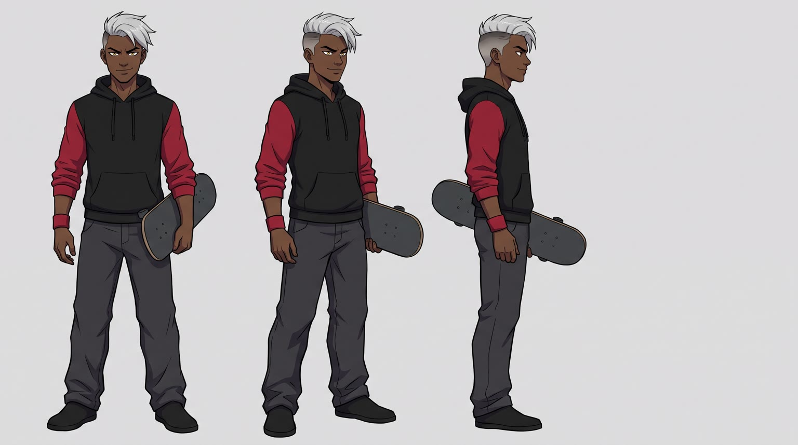
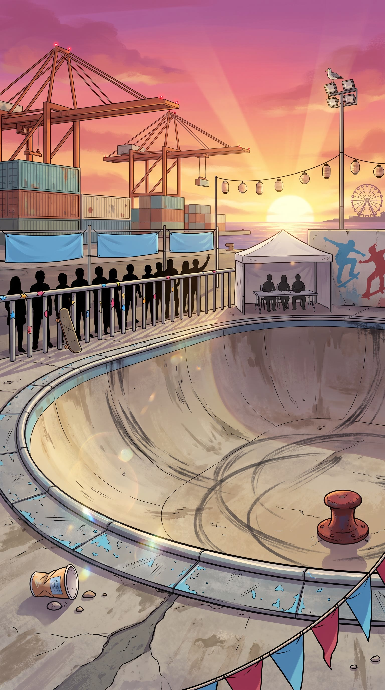
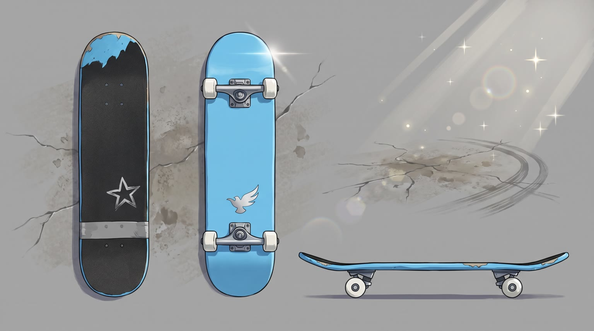
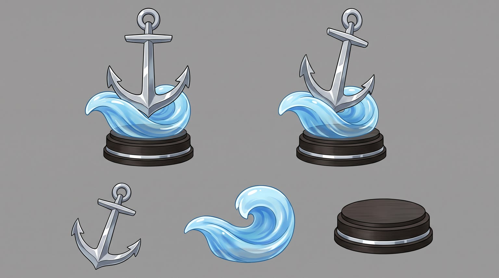

All templates · template.json · original storyboard
Anime / mangaanime-01-rookie-arcRookie Arc
Final of the Harbor Cup skate tournament at sunset. A rookie has fallen twice, the three-time champion is laughing, and she has one run left. Her power-up is {{product.name}}.
Fit by product type
| ingested | great | opening a bottle or snack at the top of the bowl is a natural power-up trigger |
| applied | good | sunscreen, balm, hair product or lotion at the bowl edge, the aura starting on her skin |
| worn | great | shoes, gloves, glasses, helmets, hoodies and watches: lacing up is the classic anime transformation |
| handheld | good | earbuds clicking in, a camera, a light or a gadget switching on |
| carried | good | unzipping a backpack or case with the glow spilling out |
| home | stretch | the power-up moves to a flashback in her bedroom; works for lamps, alarms, speakers, pillows and training gear, not for kitchen appliances or large furniture |
| consumable | good | tearing a pack or refill open, the aura bursting out |
Refuses: products for children; alcohol; anything unsafe to use right before skating (sleep aids, sedatives); products that need a readable screen or printed instructions to make sense (all lettering is post only)
Cast, world and props (shipped with the template)





- Pier Nine Bowl was poured eleven years ago inside the old fish-market loading dock on the Port Kessel waterfront; a rusted iron mooring bollard was left standing in the deep end and every local skates around it.
- The Harbor Cup is in its eleventh year. The winner gets a painted silhouette on the pier's champion wall; Dax already has three.
- Dax marks every title with a crimson tape stripe on the tail of his board: three stripes.
- Mika has skated the pier every dawn for two years, before the dock workers arrive. The bandage on her cheek is from yesterday's semi-final slam.
- She has fallen twice in the final. She has one run left, forty-five seconds, and the sun will be down in fifteen minutes.
Script: what each line must do
Right column is the worked example for Red Bull Sugarfree.
| Time | Speaker | Intent (template) | Example |
|---|---|---|---|
| 0.3-2.2 | dax | Fixed: Rookie. You'll never land it. Max 7 words. Delivery: lazy, cocky, looking down at her | Rookie. You'll never land it. |
| 2.8-4.4 | mika | Fixed: Two falls. One run left. Max 7 words. Delivery: breathing hard, to herself, eyes down | Two falls. One run left. |
| 5.2-6.6 | mika | Fixed: Not today. Max 4 words. Delivery: quiet, jaw set, steel coming into the voice | Not today. |
| 11.4-14.0 | mika | Product line: she says {{product.name}} (or its short spoken form) and the ONE benefit from product.benefits the comeback run needs (focus, grip, energy, protection, comfort, confidence). benefit comes only from product.benefits, reworded no further than person and tense; brand spelled phonetically in the video prompt using product.phonetic Max 8 words. Delivery: calm and powerful right after the power-up, eyes glowing, a half smile | Red Bull Sugarfree. Locked in, no sugar. |
| 20.8-22.6 | dax | Fixed: No way. She's a rookie? Max 7 words. Delivery: stunned whisper, sweat drop | No way. She's a rookie? |
| 24.2-25.4 | mika | Fixed: Not anymore. Max 4 words. Delivery: cool, grinning, fist raised | Not anymore. |
| 27.4-29.4 | mika (off camera) | Tagline: product.tagline if the page has one, otherwise a 3 to 5 word line that ties the product to the comeback. Max 6 words. Delivery: warm, confident voiceover | Wiiings without sugar. |
Product-adjacent props by type
| ingested | her small canvas backpack with the silver bird charm, the product chilled inside beside a rolled towel |
| applied | her small canvas backpack at the top of the bowl, the product in the front pocket |
| worn | the deck edge at the top of the bowl where she sits to gear up, the product beside her board |
| handheld | her small canvas backpack at the top of the bowl, the product clipped to the strap |
| carried | the product itself at the top of the bowl, slung on her back or at her feet |
| home | a flashback to her small bedroom above a Port Kessel noodle shop at dawn, a window over the harbour, where the product lives |
| consumable | her small canvas backpack at the top of the bowl, a pack of the product in the front pocket |
Shots and how the product appears for each type
S01 · 0 to 2.4 s · absent
Dax stands on the bowl's coping above camera, board under his foot, smirking down, radial crimson speed lines exploding behind him against the sunset.
S02 · 2.4 to 4.6 s · absent
Mika sits on the concrete at the bottom of the bowl after a fall, her sky-blue board flipped upside down beside her, the crowd silhouetted above.
S03 · 4.6 to 7.0 s · absent
Mika's eyes snap up, determined, sunset reflected in them; she is reaching for her edge.
S04 · 7.0 to 9.2 s · hero
Her hand raises the product against the low sun like a relic, label facing camera.
| ingested | a young woman's bare hand in a silver-grey hoodie sleeve raising {{product.visual}} high against the low setting sun, upright and closed, label facing the viewer, condensation sparkling if it is chilled |
| applied | a young woman's bare hand in a silver-grey hoodie sleeve raising {{product.visual}} high against the low setting sun, cap on, label facing the viewer |
| worn | a young woman's bare hands in silver-grey hoodie sleeves holding {{product.visual}} up against the low setting sun, turned so its best side and details catch the light |
| handheld | a young woman's bare hand in a silver-grey hoodie sleeve raising {{product.visual}} high against the low setting sun, logo facing the viewer |
| carried | a young woman's bare hand in a silver-grey hoodie sleeve lifting {{product.visual}} by its strap or handle against the low setting sun, still closed, logo facing the viewer |
| home | a flashback wipe to her small bedroom at dawn, painted in softer faded colours: {{product.visual}} in its place under a shaft of window light, her bare hand resting on it |
| consumable | a young woman's bare hand in a silver-grey hoodie sleeve raising one sealed {{product.visual}} high against the low setting sun, label facing the viewer |
S05 · 9.2 to 11.2 s · hero
Impact frame: the product's activation (a crack, a click, a zip, a spray, a tear) fires a burst of sky-blue and silver energy lines like a power-up.
| ingested | a young woman's bare thumb cracking open {{product.visual}} (ring pull, cap or wrapper), the burst exploding outward from the opening |
| applied | a young woman's bare fingers flipping open or pressing {{product.visual}}, the burst exploding outward from its nozzle or opening |
| worn | a young woman's bare hands pulling tight the laces, strap, zip or fastening of {{product.visual}} as it goes on, the burst exploding outward from it |
| handheld | a young woman's bare thumb clicking, switching or snapping {{product.visual}} into action, the burst exploding outward from the point where it comes alive |
| carried | a young woman's bare hand ripping open the zip or flap of {{product.visual}}, light and the burst spilling out of the opening |
| home | in the flashback bedroom, a young woman's bare hand switching on or settling onto {{product.visual}}, the burst exploding outward from it |
| consumable | a young woman's bare fingers tearing open one {{product.visual}}, the burst exploding out of the tear |
S06 · 11.2 to 14.2 s · in_use
Transformation: a sky-blue and silver aura rises around Mika, her ponytail lifts, her eyes glow blue; she shows the product and says the line.
| ingested | standing at the top of the skate bowl at sunset, holding {{product.visual}} open at chest height in one hand after a sip or a bite, upright, label facing the viewer |
| applied | standing at the top of the skate bowl at sunset, having just applied {{product.visual}}, holding it at chest height in one hand, label facing the viewer, the aura starting on her skin where she applied it |
| worn | standing at the top of the skate bowl at sunset, wearing {{product.visual}}, the aura sparking from it first, one hand touching it |
| handheld | standing at the top of the skate bowl at sunset, holding {{product.visual}} in use at chest height in one hand (switched on, clicked in or snapped on), logo facing the viewer |
| carried | standing at the top of the skate bowl at sunset, {{product.visual}} slung on her back or at her hip, one hand on the strap, logo facing the viewer |
| home | in the flashback bedroom at dawn, sitting on or beside {{product.visual}}, the aura rising as the memory of every early morning floods back |
| consumable | standing at the top of the skate bowl at sunset, holding the opened pack of {{product.visual}} at chest height in one hand, label facing the viewer, having just used one |
S07 · 14.2 to 16.6 s · absent
Mika drops into the bowl, board nose pointing down the wall, radial speed lines, the aura trailing behind her like a comet tail.
S08 · 16.6 to 20.4 s · absent
The biggest air of the day: Mika silhouetted against the giant low sun, grabbing her board, sailing high over Dax, who stands on the deck looking up.
S09 · 20.4 to 23.0 s · absent
Dax frozen in shock, jaw dropped, a sweat drop on his temple, his smirk gone; flat monochrome crimson background.
S10 · 23.0 to 26.4 s · absent
Mika lands clean on the deck, board under her feet, fist raised; the silhouetted crowd erupts behind her.
S11 · 26.4 to 30 s · hero
The product stands on the steel coping of the bowl at sunset, sparkles drifting, the empty sky above for the title.
| ingested | {{product.visual}} standing upright and open on the steel coping edge of the skate bowl, label facing the viewer, condensation sparkling |
| applied | {{product.visual}} standing upright on the steel coping edge of the skate bowl, label facing the viewer |
| worn | {{product.visual}} set neatly on the steel coping edge of the skate bowl, its best side to the viewer |
| handheld | {{product.visual}} resting on the steel coping edge of the skate bowl, logo facing the viewer |
| carried | {{product.visual}} leaning against the steel coping edge of the skate bowl, logo facing the viewer |
| home | {{product.visual}} in her small bedroom at sunset, the window behind it framing the harbour and the bowl's floodlights coming on |
| consumable | the pack of {{product.visual}} standing upright on the steel coping edge of the skate bowl, label facing the viewer |
Generation units (templated prompts)
U1 · 7 s
9:16 2D anime, cel shading, hand-painted sunset background, skate tournament at a harbour bowl. Shot 1 (0 to 2.4 s): low-angle dramatic still of @Image1 (Dax) on the bowl's coping, a snap push-in then a freeze, crimson speed lines behind him, he smirks down and says lazily: "Rookie. You'll never land it." Shot 2 (2.4 to 4.6 s): high-angle wide, slow crane down to @Image2 (Mika) sitting at the bottom of the bowl after a fall, board upside down beside her, she breathes hard and says to herself: "Two falls. One run left." Shot 3 (4.6 to 7 s): fast push-in on Mika's eyes as they snap up, determined, she says quietly: "Not today." Limited animation, held poses, anime timing. Native sound: crowd murmur, board clatter, wind, a heartbeat thump. No music. No text, no speech bubbles.
U2 · 8 s · exact-risk
9:16 2D anime power-up sequence at sunset. Shot 1 (0 to 2.2 s): locked low-angle insert, {{action.S04}}, a drawn lens flare slides across. Shot 2 (2.2 to 4.2 s): macro impact frame, {{action.S05}}, sky-blue and silver energy lines and a white impact flash. Shot 3 (4.2 to 8 s): slow orbit around @Image2 (Mika) as a sky-blue aura rises around her, ponytail lifting, eyes glowing blue, {{action.S06}}, and she says calmly: "{{line.L4}}" (say the brand as {{product.phonetic}}). The product is the exact photoreal object from @Image1, lit by the sunset with painted bloom, shape, colours and label unchanged, and stays sharp outside the glow; everything else, including her hands, is 2D anime. Native sound: rising whoosh, the product's own activation sound, deep boom, aura hum. No music. No text.U3 · 13 s
9:16 2D anime action sequence at a harbour skate bowl, sunset. Shot 1 (0 to 2.4 s): extreme low angle, @Image1 (Mika) drops into the bowl toward camera on a plain sky-blue skateboard with four wheels, radial speed lines, a sky-blue aura trail. Shot 2 (2.4 to 6.2 s): sakuga moment, slow-motion wide as she launches a huge air, grabbing the board, silhouetted against a giant orange sun, sailing high over @Image2 (Dax) who looks up from the deck. Shot 3 (6.2 to 8.8 s): dramatic still of Dax frozen in shock on a flat crimson background, a sweat drop, he whispers: "No way. She's a rookie?" Shot 4 (8.8 to 13 s): Mika lands clean on the deck, board under her feet, raises a fist and grins: "Not anymore." The crowd erupts. Normal gravity, the board stays one rigid deck with four wheels. Native sound: wheels roaring on concrete, wind rush, a beat of silence at the peak, the crowd. No music. No text.
U4 · 4 s · exact-risk
9:16 2D anime painted pack shot. Slow parallax push toward {{action.S11}}; the product is the exact photoreal object from @Image1, lit by the golden sunset rim with painted bloom and a contact shadow, and does not move or change shape. A few sky-blue sparkles drift past, the harbour and magenta sky softly behind, everything but the product hand-painted. Keep the top third of the frame as empty sky. Native sound: distant crowd, harbour wind. No music, no text.